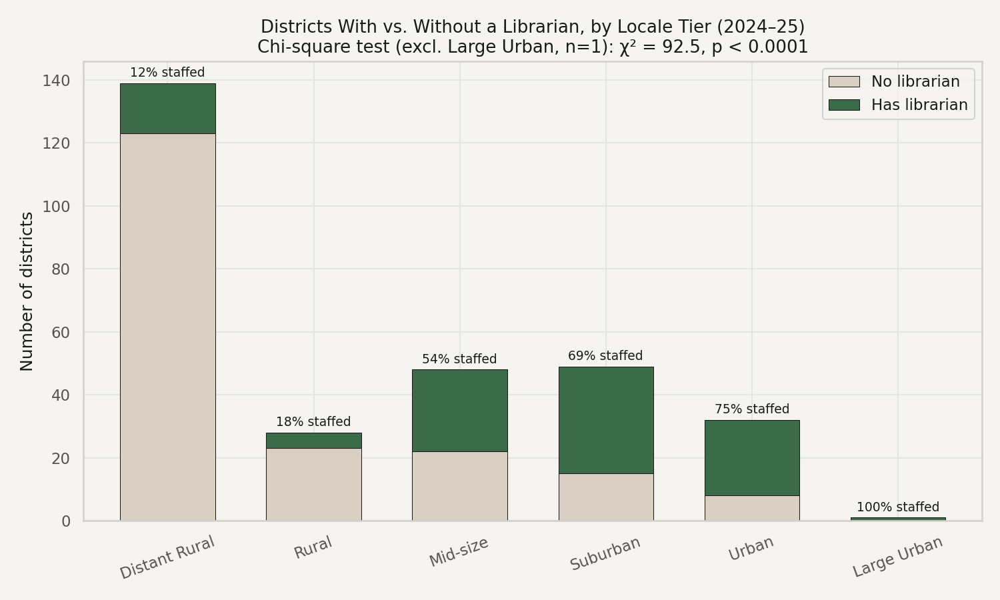
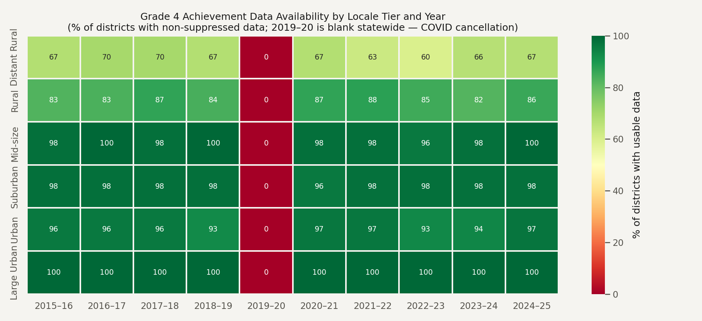

A district-by-district look at ten years of certificated librarian staffing across Washington's public schools — where the positions disappeared, where they held on, and what it means for students.
Washington spends more per student than most states, yet ranks near the bottom nationally on outcomes — and the students with the least access to a school librarian are disproportionately the ones already furthest behind.
Grade 4 and Grade 8 reading achievement plotted against statewide librarian FTE, on a shared timeline.
Share of districts reporting zero librarian FTE, 2024–25, ordered rural to urban.
Average Grade 4 ELA "% met standard," 2024–25, same tier ordering as at left.
Hover any district to see its staffing and achievement at a glance, colored by locale tier — click it, or search below, to open its full library staffing report card.
Showing the statewide average. Select a locale tier above to compare it, or search above to add your district.
Rank all 298 districts by a chosen measure, for any year on record.
Statistical views that go beyond the interactive charts elsewhere on this dashboard, generated with Python (pandas, Seaborn, SciPy) — adding rigor to this project's strongest, least-contestable finding: the gap in librarian access itself.
A chi-square test of independence between locale tier and whether a district has any librarian at all (2024–25) — testing whether a district's locale predicts whether it has a librarian in the first place.

Achievement-data suppression (small sample sizes, <10 students) is concentrated in rural districts. This heatmap shows the pattern by tier and year.

Every district plotted individually, colored by locale classification.